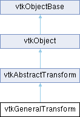

|
Etrek
|
|
Etrek
|
allows operations on any transforms More...
#include <vtkGeneralTransform.h>

Public Member Functions | |
| vtkTypeMacro (vtkGeneralTransform, vtkAbstractTransform) | |
| void | PrintSelf (ostream &os, vtkIndent indent) override |
| void | Identity () |
| void | Inverse () override |
| void | Concatenate (vtkAbstractTransform *transform) |
| void | PreMultiply () |
| void | PostMultiply () |
| int | GetNumberOfConcatenatedTransforms () |
| vtkAbstractTransform * | GetConcatenatedTransform (int i) |
| vtkTypeBool | GetInverseFlag () |
| int | CircuitCheck (vtkAbstractTransform *transform) override |
| vtkAbstractTransform * | MakeTransform () override |
| vtkMTimeType | GetMTime () override |
| void | Translate (double x, double y, double z) |
| void | Translate (const double x[3]) |
| void | Translate (const float x[3]) |
| void | RotateWXYZ (double angle, double x, double y, double z) |
| void | RotateWXYZ (double angle, const double axis[3]) |
| void | RotateWXYZ (double angle, const float axis[3]) |
| void | RotateX (double angle) |
| void | RotateY (double angle) |
| void | RotateZ (double angle) |
| void | Scale (double x, double y, double z) |
| void | Scale (const double s[3]) |
| void | Scale (const float s[3]) |
| void | Concatenate (vtkMatrix4x4 *matrix) |
| void | Concatenate (const double elements[16]) |
| void | SetInput (vtkAbstractTransform *input) |
| vtkAbstractTransform * | GetInput () |
| void | Push () |
| void | Pop () |
| void | InternalTransformPoint (const float in[3], float out[3]) override |
| void | InternalTransformPoint (const double in[3], double out[3]) override |
| void | InternalTransformDerivative (const float in[3], float out[3], float derivative[3][3]) override |
| void | InternalTransformDerivative (const double in[3], double out[3], double derivative[3][3]) override |
| Public Member Functions inherited from vtkAbstractTransform | |
| vtkTypeMacro (vtkAbstractTransform, vtkObject) | |
| void | TransformPoint (const float in[3], float out[3]) |
| void | TransformPoint (const double in[3], double out[3]) |
| double * | TransformPoint (double x, double y, double z) VTK_SIZEHINT(3) |
| double * | TransformPoint (const double point[3]) VTK_SIZEHINT(3) |
| double * | TransformNormalAtPoint (const double point[3], const double normal[3]) VTK_SIZEHINT(3) |
| double * | TransformVectorAtPoint (const double point[3], const double vector[3]) VTK_SIZEHINT(3) |
| virtual void | TransformPoints (vtkPoints *inPts, vtkPoints *outPts) |
| virtual void | TransformPointsNormalsVectors (vtkPoints *inPts, vtkPoints *outPts, vtkDataArray *inNms, vtkDataArray *outNms, vtkDataArray *inVrs, vtkDataArray *outVrs, int nOptionalVectors=0, vtkDataArray **inVrsArr=nullptr, vtkDataArray **outVrsArr=nullptr) |
| vtkAbstractTransform * | GetInverse () |
| void | SetInverse (vtkAbstractTransform *transform) |
| void | DeepCopy (vtkAbstractTransform *) |
| void | Update () |
| void | Modified () override |
| void | UnRegister (vtkObjectBase *O) override |
| float * | TransformFloatPoint (float x, float y, float z) VTK_SIZEHINT(3) |
| float * | TransformFloatPoint (const float point[3]) VTK_SIZEHINT(3) |
| double * | TransformDoublePoint (double x, double y, double z) VTK_SIZEHINT(3) |
| double * | TransformDoublePoint (const double point[3]) VTK_SIZEHINT(3) |
| void | TransformNormalAtPoint (const float point[3], const float in[3], float out[3]) |
| void | TransformNormalAtPoint (const double point[3], const double in[3], double out[3]) |
| double * | TransformDoubleNormalAtPoint (const double point[3], const double normal[3]) VTK_SIZEHINT(3) |
| float * | TransformFloatNormalAtPoint (const float point[3], const float normal[3]) VTK_SIZEHINT(3) |
| void | TransformVectorAtPoint (const float point[3], const float in[3], float out[3]) |
| void | TransformVectorAtPoint (const double point[3], const double in[3], double out[3]) |
| double * | TransformDoubleVectorAtPoint (const double point[3], const double vector[3]) VTK_SIZEHINT(3) |
| float * | TransformFloatVectorAtPoint (const float point[3], const float vector[3]) VTK_SIZEHINT(3) |
| Public Member Functions inherited from vtkObject | |
| vtkBaseTypeMacro (vtkObject, vtkObjectBase) | |
| virtual void | DebugOn () |
| virtual void | DebugOff () |
| bool | GetDebug () |
| void | SetDebug (bool debugFlag) |
| void | PrintSelf (ostream &os, vtkIndent indent) override |
| void | RemoveObserver (unsigned long tag) |
| void | RemoveObservers (unsigned long event) |
| void | RemoveObservers (const char *event) |
| void | RemoveAllObservers () |
| vtkTypeBool | HasObserver (unsigned long event) |
| vtkTypeBool | HasObserver (const char *event) |
| vtkTypeBool | InvokeEvent (unsigned long event) |
| vtkTypeBool | InvokeEvent (const char *event) |
| std::string | GetObjectDescription () const override |
| unsigned long | AddObserver (unsigned long event, vtkCommand *, float priority=0.0f) |
| unsigned long | AddObserver (const char *event, vtkCommand *, float priority=0.0f) |
| vtkCommand * | GetCommand (unsigned long tag) |
| void | RemoveObserver (vtkCommand *) |
| void | RemoveObservers (unsigned long event, vtkCommand *) |
| void | RemoveObservers (const char *event, vtkCommand *) |
| vtkTypeBool | HasObserver (unsigned long event, vtkCommand *) |
| vtkTypeBool | HasObserver (const char *event, vtkCommand *) |
| template<class U, class T> | |
| unsigned long | AddObserver (unsigned long event, U observer, void(T::*callback)(), float priority=0.0f) |
| template<class U, class T> | |
| unsigned long | AddObserver (unsigned long event, U observer, void(T::*callback)(vtkObject *, unsigned long, void *), float priority=0.0f) |
| template<class U, class T> | |
| unsigned long | AddObserver (unsigned long event, U observer, bool(T::*callback)(vtkObject *, unsigned long, void *), float priority=0.0f) |
| vtkTypeBool | InvokeEvent (unsigned long event, void *callData) |
| vtkTypeBool | InvokeEvent (const char *event, void *callData) |
| virtual void | SetObjectName (const std::string &objectName) |
| virtual std::string | GetObjectName () const |
| Public Member Functions inherited from vtkObjectBase | |
| const char * | GetClassName () const |
| virtual vtkTypeBool | IsA (const char *name) |
| virtual vtkIdType | GetNumberOfGenerationsFromBase (const char *name) |
| virtual void | Delete () |
| virtual void | FastDelete () |
| void | InitializeObjectBase () |
| void | Print (ostream &os) |
| void | Register (vtkObjectBase *o) |
| int | GetReferenceCount () |
| void | SetReferenceCount (int) |
| bool | GetIsInMemkind () const |
| virtual void | PrintHeader (ostream &os, vtkIndent indent) |
| virtual void | PrintTrailer (ostream &os, vtkIndent indent) |
| virtual bool | UsesGarbageCollector () const |
Static Public Member Functions | |
| static vtkGeneralTransform * | New () |
| Static Public Member Functions inherited from vtkObject | |
| static vtkObject * | New () |
| static void | BreakOnError () |
| static void | SetGlobalWarningDisplay (vtkTypeBool val) |
| static void | GlobalWarningDisplayOn () |
| static void | GlobalWarningDisplayOff () |
| static vtkTypeBool | GetGlobalWarningDisplay () |
| Static Public Member Functions inherited from vtkObjectBase | |
| static vtkTypeBool | IsTypeOf (const char *name) |
| static vtkIdType | GetNumberOfGenerationsFromBaseType (const char *name) |
| static vtkObjectBase * | New () |
| static void | SetMemkindDirectory (const char *directoryname) |
| static bool | GetUsingMemkind () |
Protected Member Functions | |
| void | InternalDeepCopy (vtkAbstractTransform *t) override |
| void | InternalUpdate () override |
| Protected Member Functions inherited from vtkObject | |
| void | RegisterInternal (vtkObjectBase *, vtkTypeBool check) override |
| void | UnRegisterInternal (vtkObjectBase *, vtkTypeBool check) override |
| void | InternalGrabFocus (vtkCommand *mouseEvents, vtkCommand *keypressEvents=nullptr) |
| void | InternalReleaseFocus () |
| Protected Member Functions inherited from vtkObjectBase | |
| virtual void | ReportReferences (vtkGarbageCollector *) |
| vtkObjectBase (const vtkObjectBase &) | |
| void | operator= (const vtkObjectBase &) |
Protected Attributes | |
| vtkAbstractTransform * | Input |
| vtkTransformConcatenation * | Concatenation |
| vtkTransformConcatenationStack * | Stack |
| Protected Attributes inherited from vtkAbstractTransform | |
| float | InternalFloatPoint [3] |
| double | InternalDoublePoint [3] |
| Protected Attributes inherited from vtkObject | |
| bool | Debug |
| vtkTimeStamp | MTime |
| vtkSubjectHelper * | SubjectHelper |
| std::string | ObjectName |
| Protected Attributes inherited from vtkObjectBase | |
| std::atomic< int32_t > | ReferenceCount |
| vtkWeakPointerBase ** | WeakPointers |
Additional Inherited Members | |
| Static Protected Member Functions inherited from vtkObjectBase | |
| static vtkMallocingFunction | GetCurrentMallocFunction () |
| static vtkReallocingFunction | GetCurrentReallocFunction () |
| static vtkFreeingFunction | GetCurrentFreeFunction () |
| static vtkFreeingFunction | GetAlternateFreeFunction () |
allows operations on any transforms
vtkGeneralTransform is like vtkTransform and vtkPerspectiveTransform, but it will work with any vtkAbstractTransform as input. It is not as efficient as the other two, however, because arbitrary transformations cannot be concatenated by matrix multiplication. Transform concatenation is simulated by passing each input point through each transform in turn.
|
overridevirtual |
Check for self-reference. Will return true if concatenating with the specified transform, setting it to be our inverse, or setting it to be our input will create a circular reference. CircuitCheck is automatically called by SetInput(), SetInverse(), and Concatenate(vtkXTransform *). Avoid using this function, it is experimental.
Reimplemented from vtkAbstractTransform.
| void vtkGeneralTransform::Concatenate | ( | vtkAbstractTransform * | transform | ) |
Concatenate the specified transform with the current transformation according to PreMultiply or PostMultiply semantics. The concatenation is pipelined, meaning that if any of the transformations are changed, even after Concatenate() is called, those changes will be reflected when you call TransformPoint().
|
inline |
Concatenates the matrix with the current transformation according to PreMultiply or PostMultiply semantics.
|
inline |
Get one of the concatenated transformations as a vtkAbstractTransform. These transformations are applied, in series, every time the transformation of a coordinate occurs. This method is provided to make it possible to decompose a transformation into its constituents, for example to save a transformation to a file.
|
inline |
|
overridevirtual |
Override GetMTime to account for input and concatenation.
Reimplemented from vtkAbstractTransform.
|
inline |
Get the total number of transformations that are linked into this one via Concatenate() operations or via SetInput().
|
inline |
Set this transformation to the identity transformation. If the transform has an Input, then the transformation will be reset so that it is the same as the Input.
|
overrideprotectedvirtual |
Perform any subclass-specific DeepCopy.
Reimplemented from vtkAbstractTransform.
|
overridevirtual |
Implements vtkAbstractTransform.
|
overridevirtual |
This will calculate the transformation as well as its derivative without calling Update. Meant for use only within other VTK classes.
Implements vtkAbstractTransform.
|
overridevirtual |
Implements vtkAbstractTransform.
|
overridevirtual |
This will calculate the transformation without calling Update. Meant for use only within other VTK classes.
Implements vtkAbstractTransform.
|
overrideprotectedvirtual |
Perform any subclass-specific Update.
Reimplemented from vtkAbstractTransform.
|
inlineoverridevirtual |
Invert the transformation. This will also set a flag so that the transformation will use the inverse of its Input, if an Input has been set.
Implements vtkAbstractTransform.
|
overridevirtual |
Make another transform of the same type.
Implements vtkAbstractTransform.
|
inline |
Deletes the transformation on the top of the stack and sets the top to the next transformation on the stack.
|
inline |
Sets the internal state of the transform to PostMultiply. All subsequent operations will occur after those already represented in the current transformation. In homogeneous matrix notation, M = A*M where M is the current transformation matrix and A is the applied matrix. The default is PreMultiply.
|
inline |
Sets the internal state of the transform to PreMultiply. All subsequent operations will occur before those already represented in the current transformation. In homogeneous matrix notation, M = M*A where M is the current transformation matrix and A is the applied matrix. The default is PreMultiply.
|
overridevirtual |
Methods invoked by print to print information about the object including superclasses. Typically not called by the user (use Print() instead) but used in the hierarchical print process to combine the output of several classes.
Reimplemented from vtkAbstractTransform.
|
inline |
Pushes the current transformation onto the transformation stack.
|
inline |
Create a rotation matrix and concatenate it with the current transformation according to PreMultiply or PostMultiply semantics. The angle is in degrees, and (x,y,z) specifies the axis that the rotation will be performed around.
|
inline |
Create a rotation matrix about the X, Y, or Z axis and concatenate it with the current transformation according to PreMultiply or PostMultiply semantics. The angle is expressed in degrees.
|
inline |
Create a scale matrix (i.e. set the diagonal elements to x, y, z) and concatenate it with the current transformation according to PreMultiply or PostMultiply semantics.
| void vtkGeneralTransform::SetInput | ( | vtkAbstractTransform * | input | ) |
Set the input for this transformation. This will be used as the base transformation if it is set. This method allows you to build a transform pipeline: if the input is modified, then this transformation will automatically update accordingly. Note that the InverseFlag, controlled via Inverse(), determines whether this transformation will use the Input or the inverse of the Input.
|
inline |
Create a translation matrix and concatenate it with the current transformation according to PreMultiply or PostMultiply semantics.